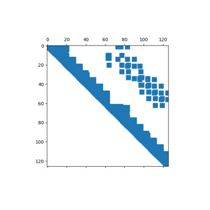

PyMAPDL math examples#
These examples demonstrate using APDL Math from the PyMAPDL library.



APDLMath Sparse Matrices and SciPy Sparse Matrices
APDLMath Sparse Matrices and SciPy Sparse Matrices

Use APDLMath to Solve a Dense Matrix Linear System
Use APDLMath to Solve a Dense Matrix Linear System

Performing Sparse Factorization and Solve Operations
Performing Sparse Factorization and Solve Operations

Manipulate APDLMath vectors or dense matrices as NumPy Arrays
Manipulate APDLMath vectors or dense matrices as NumPy Arrays